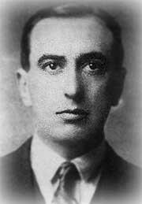

Escritor chileno
Nació el 10 de enero de 1893 en Santiago de Chile.
Hijo de la escritora María Luisa Fernández Bascuñán.
Criado en el seno de una familia aristocrática, su existencia estuvo plagada de toda clase de acontecimientos artísticos, políticos y sentimentales de la más variada especie.
Cursó estudios en su ciudad natal. Escribió sus primeros poemas a los doce años y pronto apareció publicado un manifiesto en el que rechazaba toda la poesía anterior a él.
Casado tres veces, sufrió incluso varios atentados por sus actividades izquierdistas, además de ser amenazado de muerte por el padre de Ximena Amunátegui, una bella adolescente de la que se enamoró tan perdidamente que la raptó a la salida del colegio. Fue así como se fugó a París en 1928 con la que sería su segunda esposa, dejando atrás uno de los mayores escándalos en la historia de la sociedad chilena de comienzos del siglo XX.
Durante su residencia en París toma contacto con la literatura de los poetas surrealistas como Guillaume Apollinaire y Pierre Reverdy, con los que fundaría la revista Nord-Sud. Se alejó poco después del surrealismo al no aceptar la opinión de que el artista es un mero instrumento revelador de su inconsciente. De igual manera rechazó el futurismo. Como respuesta a todos estos movimientos, su actitud desafiante lo llevó a dar a luz el movimiento que le valió la posteridad: el creacionismo, el cual él mismo fue definiendo poco a poco en escritos como el célebre manifiesto "Non serviam". En él, Huidobro ataca sin rodeos la labor de los vates: "Qué ha salido de nosotros que no estuviera antes rodeando nuestros ojos? (_) Hemos cantado a la naturaleza, (pero) nunca hemos creado realidades propias, como ella lo hace (_). Non serviam. No he de ser tu esclavo, madre Natura; seré tu amo".
Este concepto constituyó el eje de su obra poética, sembrada de impactantes imágenes, de yuxtaposiciones efectistas y de letras y secuencias de palabras de carácter aleatorio. Algunos de su poemas recuerdan los caligramas de Apollinaire. Su gran habilidad de comunicador contribuyó a extender el entusiasmo por la experimentación en la Europa de entreguerras. Sus continuos viajes por el mundo le permitieron además trabar amistad con toda la heterogénea nómina de escritores y artistas de la vanguardia europea y con estrellas de la época dorada de Hollywood, como la diva Gloria Swanson y el actor Douglas Fairbanks. Durante la Guerra Civil española (1936-1939), fue un activo y enérgico conferenciante político, arengando con un altavoz desde un coche blindado a los soldados rebeldes en los frentes de Madrid y Aragón, instándoles a que se pasaran a las tropas leales a la República. También participó en la Segunda Guerra Mundial y transmitió desde París sus crónicas para "La Voz de América". En esta conflagración fue herido en dos ocasiones y se enorgulleció de guardar, como botín de guerra, el teléfono particular de Adolf Hitler.
Además de poemas, su producción se completó con novelas (Sátiro o el poder de las palabras, 1939), manifiestos, ensayos (Vientos contrarios, 1926) y obras teatrales (Gilles de Raiz, en francés, 1932).
Cuando el escritor estaba a punto de fallecer en su hacienda de Llolleo, murmura algunas palabras en el lecho de muerte. Rodeado de algunos amigos como Lucho Vargas y la pintora chilena Henriette Petit, Huidobro miró fijamente a esta última y le dijo: "Cara de poto." (cara de culo). En ese momento, falleció el autor de "Poemas árticos", "Altazor", "Cagliostro" y "Mío Cid Campeador", a causa de un derrame cerebral. Fue el 2 enero de 1948, ocho días antes de cumplir 55 años.
Escribió su propio epitafio: "Abrid esta tumba: al fondo se ve el mar". Se encuentra sepultado en Cartagena (Chile), frente al mar.
Ecos del alma, 1911
La gruta del silencio, 1913
Canciones en la noche, 1913
Pasando y pasando, 1914
Las pagodas ocultas, 1914
Adán, 1916
El espejo de agua, 1916
Horizon Carrét, 1917
Poemas árticos, 1918
Ecuatorial, 1918
Tour Eiffe, 1918
Hallali, 1918
Saisons Choisies, 1921
Finis Britannia, 1923
Automne Régulier, 1925
Tout à Coup, 1925
Automme régulier, 1925
Manifestes, 1925
Vientos contrarios, 1926
Mío Cid Campeador, 1929
Temblor de cielo, 1931
Altazor o el viaje en paracaídas, 1931
Tremblement de Ciel, 1932
Gilles de Raiz, 1932
La próxima, 1934
Papá o el diario de Alicia Mir, 1934
Cagliostro, 1934
En la luna, 1934
Tres novelas ejemplares, 1935 (con Hans Arp)
Sátiro o el poder de las palabras, 1939
Ver y palpar, Santiago de Chile, Ercilla, 1941
El ciudadano del olvido, Santiago de Chile, Ercilla, 1941
Últimos poemas, Santiago de Chile, Ahués Hermanos, 1948